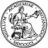
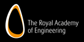
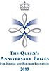

Nobel Prizes and Fellowships
The academic quality of the University is reflected partly in the Nobel Prizes and Fellowships associated with the University community.
- Nobel Laureates
- Fellows of the Academy of Social Sciences
- Fellows of the Academy of Medical Sciences
- Fellows of the British Academy
- Fellows of the Royal Academy of Engineering
- Fellows of the Royal Society
- National Academy of Sciences
- Queen's Anniversary Prize for Higher Education
- Vetlesen Prize
Nobel Laureates
- Sir William Ramsay (1852–1916)
Principal and Professor of Chemistry at University College, Bristol (later the University of Bristol) from 1880 to 1887. The Nobel Prize 1904 ‘in recognition of his services in the discovery of the inert gaseous elements in air, and his determination of their place in the periodic system’. - Paul Dirac (1902–84)
Graduated from Bristol with a BSc (Engineering) in 1921, then studied mathematics at Bristol for a further two years.
The Nobel Prize in Physics 1933 (1/2 share) ‘for the discovery of new productive forms of atomic theory’. - Cecil Frank Powell (1903–69)
At Bristol from 1927, first as Research Assistant to A M Tyndall, then appointed lecturer and, in 1948, established as Melville Wills Professor of Physics.
The Nobel Prize in Physics 1950 ‘for his development of the photographic method of studying nuclear processes and his discoveries regarding mesons made with this method’. - Sir Winston Churchill (1874–1965)
Chancellor of the University of Bristol from 1929 until 1965.
The Nobel Prize for Literature 1953 was awarded to Sir Winston Churchill, 'for his mastery of historical and biographical description as well as for brilliant oratory in defending exalted human values'. - Dorothy Hodgkin (1910–94)
Chancellor of the University of Bristol from 1970 until 1988.
The Nobel Prize in Chemistry 1964 was awarded to Dorothy Hodgkin, 'for her determinations by X-ray techniques of the structures of important biochemical substances'. - Hans Albrecht Bethe (1906–2005)
Held a fellowship at the University of Bristol in 1934.
The Nobel Prize in Physics 1967 ‘for his contribution to the theory of nuclear reactions, especially his discoveries concerning the energy production in stars’. - Max Delbrück (1906-81)
Research worker at the University in 1930-32.
The Nobel Prize in Physiology or Medicine 1969 (1/3 share) for discoveries concerning 'the replication mechanism and genetic structure of viruses'. - Gerhard Herzberg (1904-99)
Carried out postdoctoral work at the University in 1929-30.
The Nobel Prize in Chemistry 1971 'for his contributions to the knowledge of electronic structure and geometry of molecules, particularly free radicals'. - Sir Nevill Francis Mott (1905–96)
Chair in theoretical physics at Bristol from 1933, then, after a period of military research in London during the war, head of the Bristol physics department.
The Nobel Prize in Physics 1977 (1/3 share) for 'fundamental theoretical investigations of the electronic structure of magnetic and disordered systems’. - Sir Paul Nurse (b.1949)
Chancellor of the University of Bristol from 2017.
The Nobel Prize in Physiology or Medicine 2001 (1/3 share) for 'discoveries of key regulators of the cell cycle’. - Harold Pinter (1930–2008)
Playwright. Honorary Doctor of Letters, University of Bristol, 1998.
The Nobel Prize for Literature 2005 was awarded to Harold Pinter, ‘who in his plays uncovers the precipice under everyday prattle and forces entry into oppression's closed rooms’. - Jean-Marie Gustave Le Clézio (b.1940)
Writer. Studied English at Bristol, 1958-9.
The Nobel Prize for Literature 2008 was awarded to Le Clézio, ‘author of new departures, poetic adventure and sensual ecstasy, explorer of a humanity beyond and below the reigning civilization’. - Angus Deaton (b.1945)
Professor of Econometrics at Bristol from 1976 until 1983.
The Nobel Prize in Economics 2015 was awarded to Angus Deaton 'for his analysis of consumption, poverty, and welfare'.
Fellows of the Academy of Social Sciences
- Jonathan Beaverstock, Professor of International Management, School of Economics, Finance and Management
- Terrell Carver, Professor of Political Theory, School of Sociology, Politics and International Studies
- Sarah Childs, Professor of Politics and Gender, School of Sociology, Politics and International Studies
- Michelle Cini, Professor of European Politics, School of Sociology, Politics and International Studies
- Professor Guy Claxton, Visiting Fellow, School of Education
- Joanne Conaghan, Professor of Law, University of Bristol Law School
- David Cowan, Professor of Law and Policy, University of Bristol Law School
- Michael Crossley, Professor of Comparative and International Education, School of Education
- Rosemary Deem, Visiting Professor, School of Education
- Keri Facer, Professor of Educational and Social Futures, School of Education
- Jenny Donovan, Professor of Social Medicine, Bristol Medical School: Population Health Sciences
- Steven Greer, Professor of Human Rights, University of Bristol Law School
- Richard Harris, Professor of Quantitative Social Geography, School of Geographical Sciences
- Professor Marianne Hester OBE, Chair in Gender, Violence and International Policy, School for Policy Studies
- Kelvyn Jones, Professor of Human Quantitative Geography, School of Geographical Sciences
- Helen Lambert, Professor of Medical Anthropology, Bristol Medical School: Population Health Sciences
- Stewart Lansley, Visiting Fellow in the School of Policy Studies
- Wendy Larner, Honorary Professor of Geographical Sciences, School of Geographical Sciences
- Professor Stephan Lewandowsky, Chair in Cognitive Psychology, School of Experimental Psychology and the Cabot Institute
- Liz Lloyd, Professor of Social Gerontology, School of Policy Studies
- Gregor McLennan, Professor of Sociology, School of Sociology, Politics and International Studies
- Judith Masson, Professor of Socio-Legal Studies, University of Bristol Law School
- Roger Middleton, Professor of the History of Political Economy, Department of History (Historical Studies)
- Tariq Modood, Professor of Sociology, Politics and Public Policy, School of Sociology, Politics and International Studies
- Professor Judith Squires, Pro Vice-Chancellor and Provost
- Leon Tikly, Professor in Education, School of Education
Emeritus:
- Bernard Alford, Emeritus Professor of Economic and Social History, Department of History (Historical Studies)
- Patricia Broadfoot, Emeritus Professor of Education, School of Education
- Ray Forrest, Emeritus Professor, School for Policy Studies
- Malcolm Johnson, Emeritus Professor of Health and Social Policy, School for Policy Studies
- Hilary Land, Emeritus Professor of Family Policy and Child Welfare, School for Policy Studies
- Martin Partington, Emeritus Professor of Law, University of Bristol Law School
- Celia Wells, Emeritus Professor of Criminal Law, University of Bristol Law School
Fellows of the Academy of Medical Sciences
- Gianni Angelini, British Heart Foundation (BHF) Professor of Cardiac Surgery and Director, Bristol Medical School: Translational Health Sciences
- David Anstee, Professor and Visiting Fellow, School of Biochemistry
- Jane Blazeby, Professor of Surgery, Bristol Medical School: Population Health Sciences
- Graham Collingridge, Professor of Neuroscience in Anatomy, School of Physiology, Pharmacology and Neuroscience
- Peter Cullen, Professor of Biochemistry, School of Biochemistry
- George Davey Smith, Professor of Clinical Epidemiology, Bristol Medical School: Population Health Sciences
- Andrew Dick, Professor of Ophthalmology, Schools of Cellular and Molecular Medicine and Clinical Sciences
- Jenny Donovan, Professor of Social Medicine, Bristol Medical School: Population Health Sciences
- David Gunnell, Professor of Epidemiology, Bristol Medical School: Population Health Sciences
- Andrew Halestrap, Professor of Biochemistry, School of Biochemistry
- Jeremy Henley, Professor of Molecular Neuroscience, School of Biochemistry
- Stafford Lightman, Professor of Medicine, Bristol Medical School: Translational Health Sciences
- David Lodge, Professor and Visiting Fellow, School of Physiology and Pharmacology
- Paul Martin, Professor of Cell Biology in the Schools of Biochemistry and Physiology, Pharmacology and Neuroscience
- Peter Mathieson, Honorary Professor of Medicine and Dentistry, Bristol Medical School: Translational Health Sciences
- Sir Paul Nurse, Chancellor of the University of Bristol
- Timothy Peters, Professor of Primary Care Health Services Research, Bristol Medical School: Population Health Sciences
- Anne Ridley, Professor and Head of the School of Cellular and Molecular Medicine
- Jonathan Sterne, Professor of Medical Statistics and Epidemiology, Bristol Medical School: Population Health Sciences
Emeritus:
- Dick Denton, Emeritus Professor of Biochemistry, School of Biochemistry
- Jean Golding, Emeritus Professor of Paediatric and Perinatal Epidemiology, Bristol Medical School: Population Health Sciences
- Jonathan Sandy, Emeritus Professor of Orthodontics, Bristol Dental School
- Sir Eric Thomas, Emeritus Professor (Vice-Chancellor 2001-2015)
- Jeffrey Watkins, Emeritus Professor of Pharmacology, School of Physiology, Pharmacology and Neuroscience
Fellows of the British Academy
- Joanne Conaghan, Professor of Law, Bristol Law School
- Katharine Ellis, The Stanley Hugh Badock Chair in Music, Department of Music
- Robert Fowler, Henry Overton Wills Professor of Greek, Department of Classics and Ancient History
- David Gordon, Professor of Social Justice, School of Policy Studies
- Ronald Hutton, Professor of History, Department of History (Historical Studies)
- Robert Mayhew, Professor of Historical Geography and Intellectual History, School of Geographical Sciences
- Tariq Modood, Professor of Sociology, Politics and Public Policy,
School of Sociology, Politics and International Studies - Sir Paul Nurse, Chancellor of the University of Bristol
- Samir Okasha, Professor of Philosophy of Science, Department of Philosophy
- Dorothy Price, Professor of History of Art, Department of History of Art (Historical Studies)
- Carol Propper, Professor and Research Fellow, School of Economics, Finance and Management
- Tony Prosser, Professor of Public Law, University of Bristol Law School
- Fiona Steele, Professor and Visiting Fellow, School of Education
Emeritus:
- Stephen Bann, Emeritus Professor and Research Fellow in History of Art, Department of History of Arts (Historical Studies)
- John Burrow, Emeritus Professor of English, Department of English
- Gillian Clark, Emeritus Professor and Senior Research Fellow of Classics and Ancient History, Department of Classics and Ancient History
- William Doyle, Emeritus Professor and Senior Research Fellow in History, Department of History (Historical Studies)
- Peter Haggett, Emeritus Professor in Urban and Regional Geography and Senior Research Fellow in Geographical Sciences, School of Geographical Sciences
- Kelvyn Jones, Professor of Human Quantitative Geography, School of Geographical Sciences
- Richard Little, Emeritus Professor, School of Sociology, Politics and International Studies
- Peter Warren, Emeritus Professor and Senior Research Fellow in Archaeology, Department of Archaeology and Anthropology
Fellows of the Royal Academy of Engineering
- William Drury, Visiting Professor of Innovation, Department of Electrical and Electronic Engineering
- Peter Flewitt, Visiting Professor in Interface Analysis Centre, School of Physics
- David Knowles, Professor in the Department of Mechanical Engineering
- David May, Professor of Computer Science, Department of Computer Science
- Michael Wisnom, Professor of Aerospace Structures, Department of Aerospace Engineering
Emeritus:
- David Blockley, Emeritus Professor of Civil Engineering, Department of Civil Engineering
- David Ewins, Emeritus Professor in the Department of Aerospace Engineering
- Patrick Godfrey, Emeritus Professor of Systems Engineering, Department of Civil Engineering
- Joseph McGeehan, Emeritus Professor of Communications Engineering, Department of Electrical and Electronic Engineering
- David Muir Wood, Emeritus Professor of Civil Engineering, Department of Civil Engineering
- Peter Wells, Emeritus Professor, School of Clinical Sciences
Fellows of the Royal Society
- Varinder Aggarwal, Professor in the School of Chemistry
- Mike Ashfold, Professor of Physical Chemistry, School of Chemistry
- Paul Bates, Professor of Hydrology, School of Geographical Sciences
- Michael Benton, Professor of Vertebrate Palaeontology, School of Earth Sciences
- Jon Blundy, Honorary Professor, School of Earth Sciences
- Katharine Cashman, Professor of Volcanology, School of Earth Sciences
- Graham Collingridge, Professor of Neuroscience in Anatomy, School of Physiology, Pharmacology and Neuroscience
- George Davey Smith, Professor of Clinical Epidemiology, Bristol Medical School: Population Health Sciences
- Philip Donoghue, Professor of Palaeobiology, School of Earth Sciences
- Tim Elliott, Professor in the School of Earth Sciences
- Richard Evershed, Professor of Biogeochemistry, School of Chemistry
- David Ewins, Professor in the Department of Aerospace Engineering
- Christopher Hawkesworth, Professor and Senior Research Fellow in Earth Sciences, School of Earth Sciences
- Alasdair Houston, Professor of Theoretical Biology, School of Biological Sciences
- Stafford Lightman, Professor of Medicine, School of Clinical Sciences
- David Lodge, Professor and Visiting Research Fellow, School of Physiology, Pharmacology and Neuroscience
- Stephen Mann, Professor of Chemistry, School of Chemistry
- Ian Manners, Professor of Inorganic and Materials Chemistry, School of Chemistry
- Jens Marklof, Professor of Mathematical Physics (RS Wolfson Research Merit Award Holder), School of Mathematics
- David May, Professor of Computer Science, Department of Computer Science
- Sir Paul Nurse, Chancellor of the University of Bristol
- Andrew Orr-Ewing, Professor in the School of Chemistry
- Colin Pennycuick, Professor and Research Collaborator, School of Biological Sciences
- Sandu Popescu, Professor of Physics, School of Physics
- John Rarity, Professor of Optical Communications Systems, Department of Electrical and Electronic Engineering
- Anne Ridley, Professor and Head of the School of Cellular and Molecular Medicine
- Roger Thomas, Professor of Physiology, School of Physiology, Pharmacology and Neuroscience
- Bernard Wood, Professor and Honorary Senior Research Fellow, School of Earth Sciences
Emeritus:
- Roger Alder, Emeritus Professor and Senior Research Fellow in Organic Chemistry, School of Chemistry
- Sir Michael Berry, Emeritus Professor and Senior Research Fellow in Physics, School of Physics
- Malcolm Brown, Emeritus Professor of Anatomy, School of Physiology and Pharmacology
- Dick Denton, Emeritus Professor and Senior Research Fellow in Biochemistry, School of Biochemistry
- Richard Dixon, Emeritus Professor and Senior Research Fellow in Chemistry, School of Chemistry
- Sir John Enderby, Emeritus Professor in Physics, School of Physics
- Sir Anthony Epstein, Emeritus Professor of Pathology, School of Cellular and Molecular Medicine
- Bob Evans, Emeritus Professor and Senior Research Fellow in Physics, School of Physics
- Peter Green, Emeritus Professor of Statistics and Professorial Research Fellow, School of Mathematics
- Herbert Gutfreund, Emeritus Professor and Visiting Fellow in Physical Biochemistry, School of Biochemistry
- Stephen Halford, Emeritus Professor, School of Biochemistry
- Sir John Kingman, Vice-Chancellor 1985-2001
- Anthony Legon, Emeritus Professor and Senior Research Fellow of Physical Chemistry, School of Chemistry
- James Maxwell, Emeritus Professor of Chemistry, School of Chemistry
- John McNamara, Professor of Mathematics and Biology, School of Mathematics
- Mervyn Miles, Professor of Physics (Royal Society Wolfson Research Merit Award Holder), School of Physics
- John Nye, Emeritus Professor in Physics, School of Physics
- Alan Roberts, Emeritus Professor, School of Biological Sciences
- Bernard Silverman, Emeritus Professor, School of Mathematics
- Tom Simpson, Alfred Capper Pass Chair of Chemistry, School of Chemistry
- Steve Sparks, Professorial Research Fellow, School of Earth Sciences
- John Steeds, Emeritus Professor and Senior Research Fellow in Physics, School of Physics
- Anthony Walsby, Emeritus Professor, School of Biological Sciences
- Jeffrey Watkins, Emeritus Professor of Pharmacology, School of Physiology, Pharmacology and Neuroscience
- Peter Wells, Emeritus Professor, School of Clinical Sciences
National Academy of Sciences
- Katharine Cashman, Professor of Volcanology, School of Earth Sciences
Queen's Anniversary Prize for Higher Education
The University of Bristol has been awarded the Queen’s Anniversary Prize for Higher Education - the highest accolade for any academic institution – in recognition of its leading-edge research in obstetric and neonatal practice, which has made a positive difference to mothers and babies throughout the world and for its world-leading research in volcanology, which has been applied across the globe to reduce a variety of risks posed by active volcanism.
Vetlesen Prize
- Stephen Sparks, Professorial Research Fellow, School of Earth Sciences